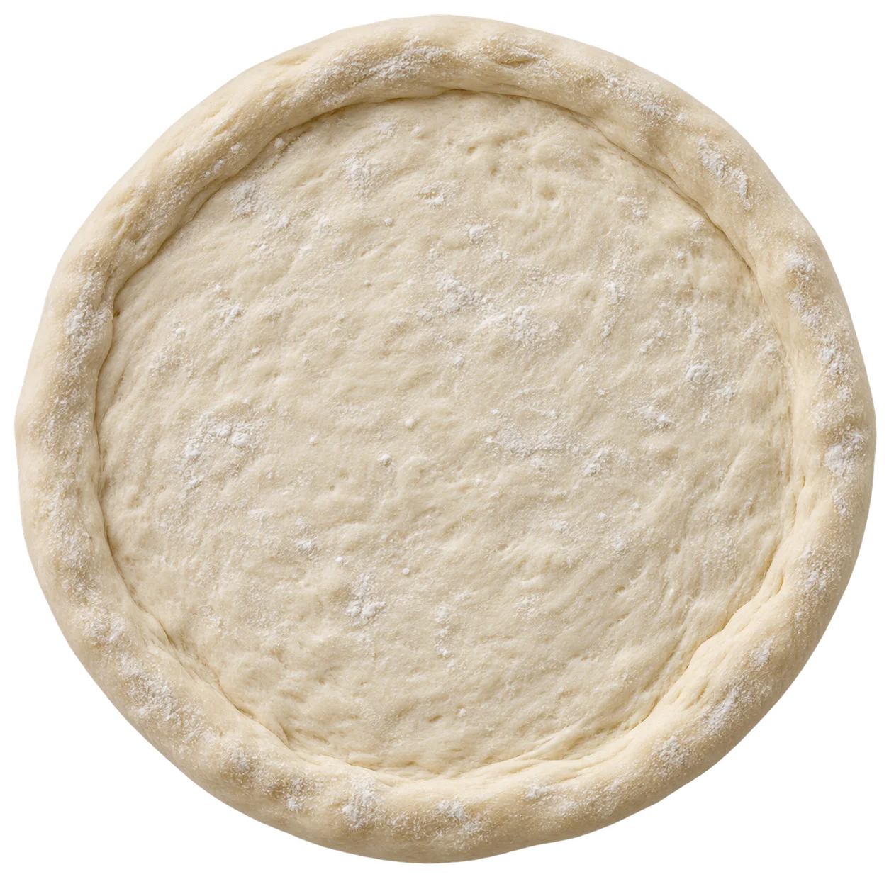

ASSEMBLY PRACTICE
One ticket. One great pizza.
PREP BOARDChoose crust to begin

PREPARE DOUGHSelect the crust from the ticket, then prepare dough.
Drag a topping onto the pizza. You can also tap a topping, or focus it and press Enter. Add one ingredient portion per step.
Topping rail
Recipe ingredients mixed with a few decoys.
MENU RECALL
Take the menu test.
Ready when you are
Ingredients, crusts, categories, and menu recognition.
FULL MENU REFERENCE
The complete researched menu.
Pizzas, salads, subs, stromboli, wings, sides, pasta, desserts, drinks, and specials. Browse every retrieved item below. Flushing listings and Grand Blanc reference items are labeled; current local availability and pricing need store confirmation.
ADMIN CONTROLS
Keep training accurate.
Changes save on this device. Export your menu to keep or share edits. This is a browser convenience lock, not secure staff authentication.
Recipe editor
Training settings
Exact build order is always required, including sauce and cheese. Edit the sequence to match the kitchen recipe.